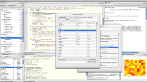

R Cloud WorkbenchRemote access to R/Bioconductor on EBI's 64-bit Linux ClusterStart the workbench by downloading the package for your operating system (Macintosh or Windows), or via Java Web Start, and you will get access to an instance of R running on one of EBI's powerful machines. You can install additional packages, upload your own data, work with graphics and collaborate with colleagues, all as if you are running R locally, but unlimited by your machine's memory, processor or data storage capacity.
Workbench Downloads
Requirements: Java (JRE 1.5+), Internet connection. Java Web StartYou can also start the R Cloud Workbench via Java Web Start (click the button below). You will need to grant the application some permissions to connect to the internet and to access your files when it starts up.
Subscribe"R Cloud" general questions and support. http://listserver.ebi.ac.uk/mailman/listinfo/rcloud "ArrayExpressHTS" RNA-Seq processing pipeline questions. http://listserver.ebi.ac.uk/mailman/listinfo/arrayexpresshts About the ProjectThe ArrayExpress R Cloud Workbench is an outgrowth of the BBSRC (UK) funded (grant number BB/E001653/1) project called BioC-WebGUIs, with internal project name BIOCEP, whose main achievement has been the construction of an R virtualization framework, and the development of a scalable, distributed framework for exposure of R/Bioconductor packages to Java applications; also, a general resource pooling framework suitable for dispatching compute-intensive tasks to the server farm infrastructure at the EBI. Project Authors
This project uses the Biocep-R open-source platform developed by Karim Chine. |
 |
ArrayExpressHTS - RNA-Seq Processing PipelineArrayExpressHTS is an R based pipeline for pre-processing, expression estimation and data quality assessment of high throughput sequencing transcriptional profiling (RNA-seq) datasets. The pipeline starts from raw sequence files and produces standard Bioconductor R objects containing transcript measurements for downstream analysis along with web reports for data quality assessment. It may be run locally on a user’s own computer or remotely on a distributed R-cloud farm at the European Bioinformatics Institute. It can be used to analyse user’s own datasets or public RNA-seq datasets from the ArrayExpress Archive.Download the package from Bioconductor The pipeline documentation is available at www.ebi.ac.uk/Tools/rwiki |
affyParaEBI - online fast preprocessing of microarray experimentsThe affyParaEBI is an R based pipeline for parallel pre-processing of Affymetrix TM chips. The pipeline starts from a directory containing raw CEL files files and produces Bioconductor R objects containing gene expression measurements suitable for further analysis. It can be used to pre-process user datasets or public microarray datasets from the ArrayExpress Archive via the ArrayExpress R package. It can be run on a user’s own local farm (by downloading the source code), or on a distributed R-cloud farm at the European Bioinformatics Institute. On that second option, using 50 computation clusters, 1000 samples can be pre-processed in about 20 minutes.Download the package by clicking affyParaEBI_1.0.0.tar.gz The pipeline documentation is available at www.ebi.ac.uk/Tools/rwiki |